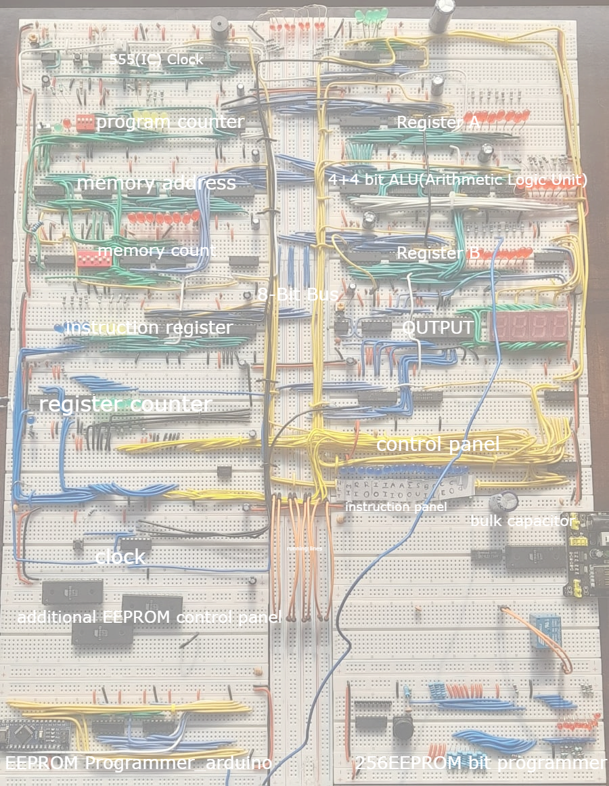

An 8 Bit programmable
Computer using individual logic ICs, registers, counters, memory
modules, and interconnected control circuitry, the computer
demonstrates how the fundamental components of a processor work
together to execute instructions.
Overview
An 8-Bit programmable computer with breadboards and integrated
circuits,The primary purpose of this build is
to understand computer architecture at the hardware level: how
instructions are fetched, decoded, and executed; how registers
exchange data; how an ALU performs computations; and how timing
and control signals coordinate the entire process.
By constructing these systems from individual components, the project provides a
practical demonstration of the fundamental principles behind CPU
design, digital logic, memory organisation, and low-level
computing.

Technical Approach
The processor is organised around an 8-bit bus, which acts as the
primary communication pathway between its components. The program
counter tracks the address of the next instruction, while the memory
address register holds the address used to access memory.
Instructions retrieved from memory are stored in the instruction
register, where the control circuitry interprets them and
coordinates their execution.
The computational section consists of two registers, A and B,
connected to a 4+4-bit ALU (Arithmetic Logic Unit). The ALU performs
arithmetic and logical operations on the values stored in these
registers. Its results can be transferred through the shared bus and
stored in other registers or sent to the output module, which
provides a visual representation of the computer's results.
Timing and instruction sequencing are handled by the clock and
control circuitry. A 555 timer IC provides clock pulses, while the
counter and control modules coordinate the individual steps required
to execute an instruction. The control panel and instruction panel
provide additional interfaces for configuring and interacting with
the system.
Below Is a Video of the program Counting from 256 an on observable clock speed